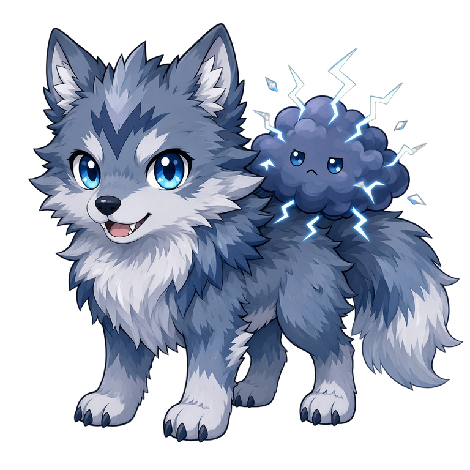
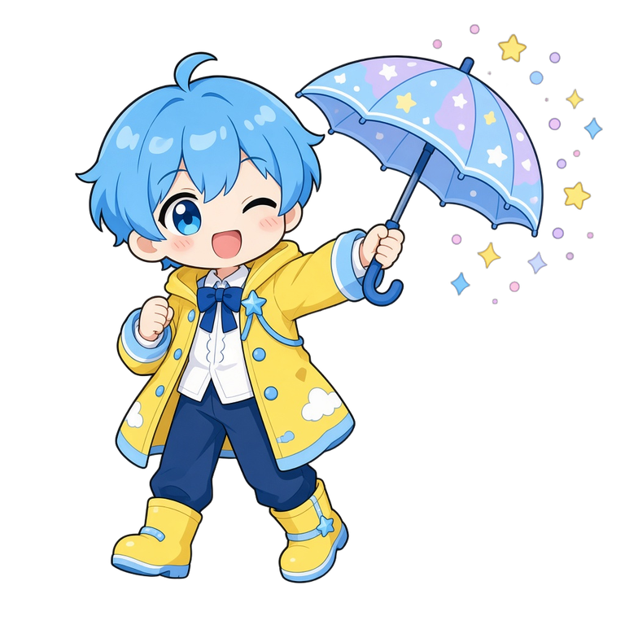
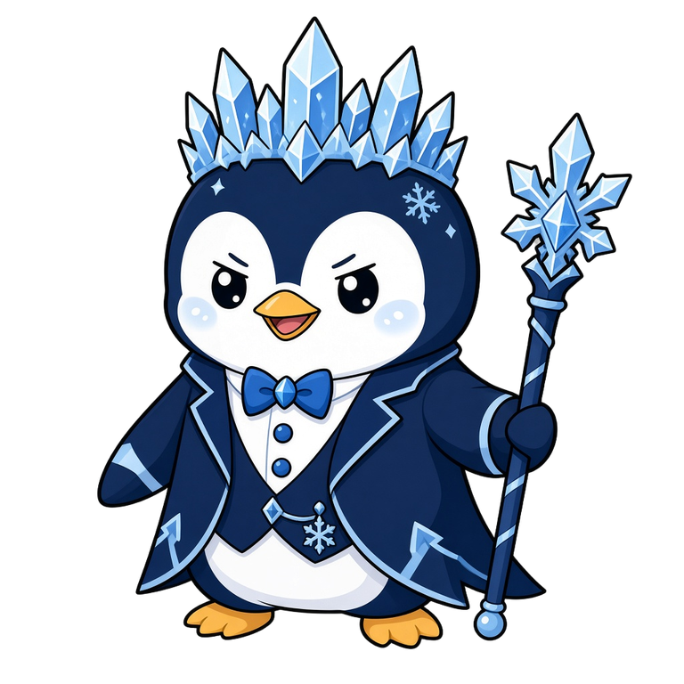
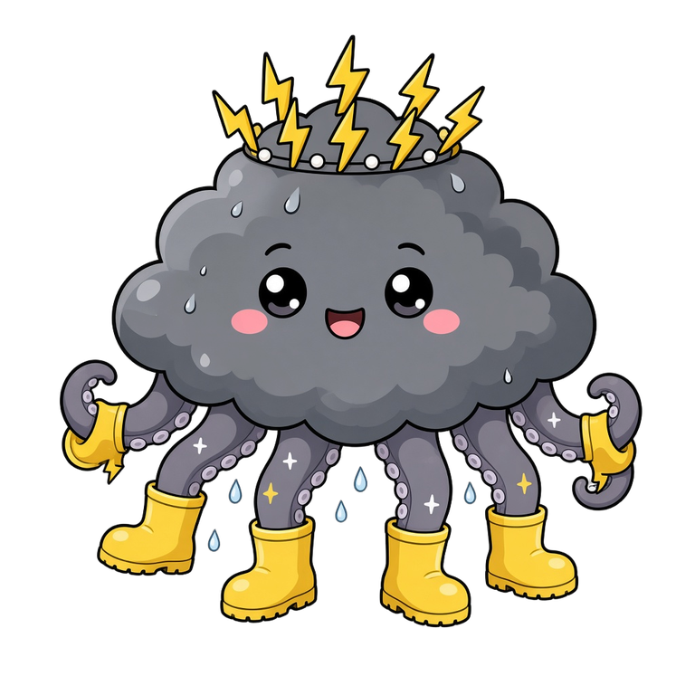
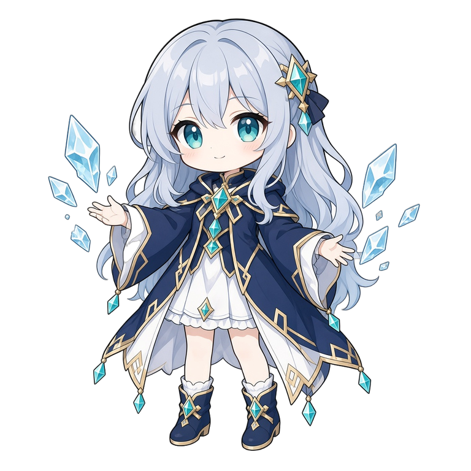

🌪️ Weather and Disasters
Sentence structures: Zero conditional · First conditional (If… will…) · should (typhoon safety)
Pictures · 圖庫


Sentence structures · 句式
Colour key: subject · If / will / should · verb · object / place
1 · Zero conditional — If + present, present (facts)
If it rains heavily, streets flood quickly.
If a typhoon comes near Hong Kong, schools close.
If there is a long drought, plants die.
2 · First conditional — If + present, will + V
If the rain keeps falling, there will be a landslide.
If Signal No. 8 is up tomorrow, we will stay at home.
If the earthquake is severe, people will move to safer places.
3 · should + V (typhoon safety)
You should stay indoors during a typhoon.
We should close the windows before the storm.
Children should keep away from flooded streets.
Notes · 筆記
- Disaster vocab: typhoon, flood, landslide, drought, earthquake, severe.
- Zero conditional = facts/habits; First = real future possibility — see Sentence structures.
- Safety advice with should during a typhoon signal.
Full printable pack: download notes.md
Character library · for games & notes





重點
Grammar focus: Zero & First conditionals · If… will… · should (typhoon)
Jump to colour-coded examples → Sentence structures · 句式
Download: zhongdian.md
Grammar · downloads
Games · 3D / anime FX
Exam Revision Games direction: Three.js FX · more animations · character library. Programmer will keep upgrading these pages.
3D FX (Three.js / 3json) · fx-kit · full demo ↗
Tiny classroom buddy (kit default). If WebGL is off, this stage hides quietly.
Tense practice
Live self-study (100 passages): 6d-tenses-practice ↗
Comprehension
Short reading / listening comprehension pack for this unit (student-safe practice).
⬇ Comprehension pack